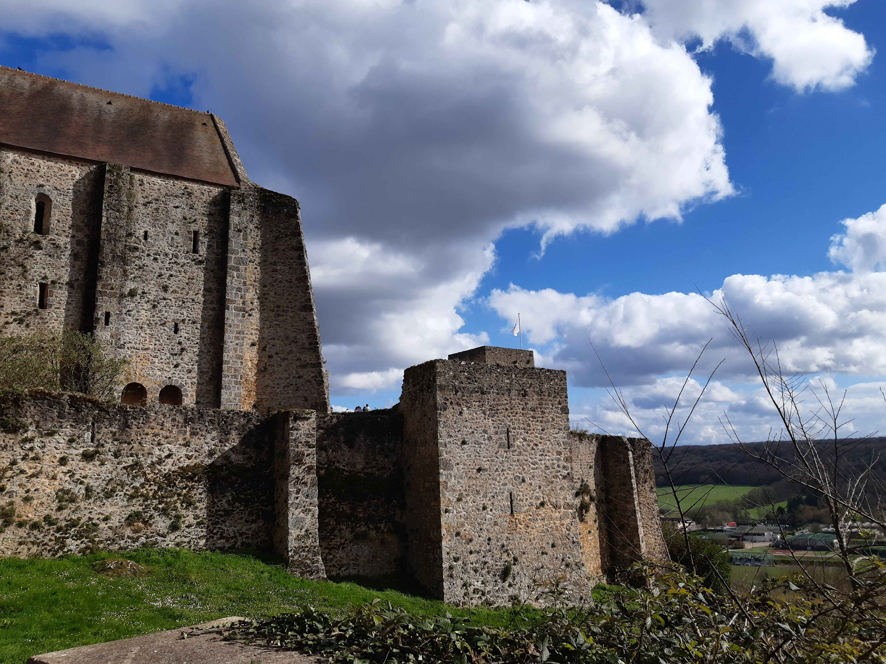
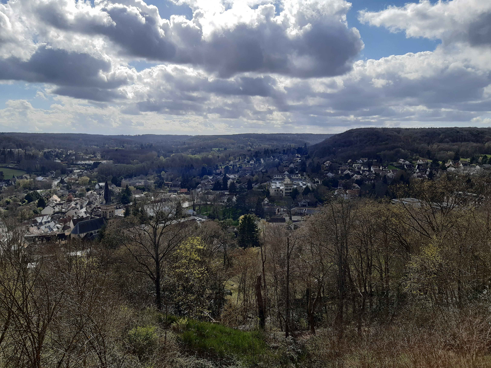

Retour
Vallée de Chevreuse
GR655 Ouest de Lozère à Saint-Rémy-lès-Chevreuse
- Type : aller simple
- Description de l'itinéraire : GR655 Ouest de Lozère à Saint-Rémy-lès-Chevreuse
- Distance : 13 km
- Dénivelé positif : 100 m
- Point le plus bas : 55 m
- Point le plus haut : 90 m
- Cotation en l'absence de neige : T1
- Intérêt : 1/5
- Date : octobre ou novembre 2023
- Photos : aucune
Palaiseau
- Type : boucle
- Description de l'itinéraire : GR655 de Lozère à Villebois - GRP Les vallées de l'Essonne de Villebois à la plante des Rochers - GR655 Est
- Distance : 12 km
- Dénivelé positif : 200 m
- Point le plus bas : 49 m
- Point le plus haut : 154 m
- Cotation en l'absence de neige : T1
- Intérêt : 1/5
- Date : entre autres le 23/11/2023
- Photos :
Châteaux de Méridon, Breteuil et la Madeleine
- Type : boucle
- Description de l'itinéraire : GR655 de Lozère à Villebois - GRP Les vallées de l'Essonne de Villebois à la plante des Rochers - GR655 Est
- Distance : 15 km
- Dénivelé positif : 300 m
- Point le plus bas : 76 m
- Point le plus haut : 171 m
- Cotation en l'absence de neige : T2
- Intérêt : 3/5
- Date : 24/03/2024
- Photos :
 Le château de la Madeleine
 Vue sur Chevreuse depuis le château de la Madeleine